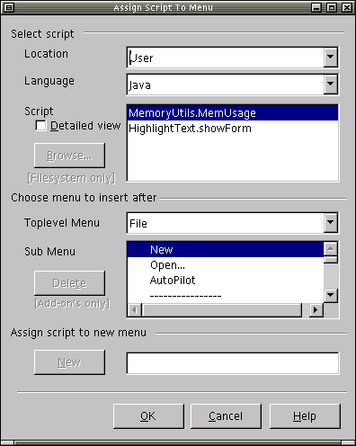
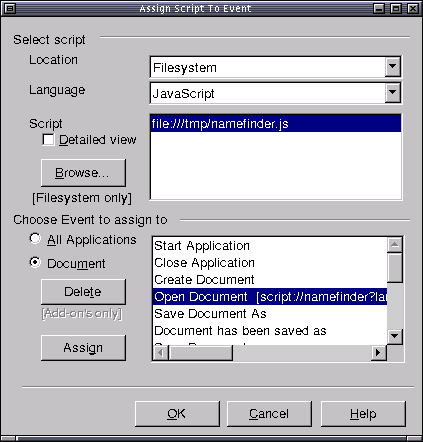

Before you install the Scripting Framework, be aware of the following:
This is an Early Developer Release of the Office Scripting Framework provided for users and developers of OpenOffice.org to try out and provide feedback. Future releases of the Framework may change.
This release of the Scripting Framework runs only on OpenOffice.org 1.1 rc and above.
The Scripting Framework is currently available in English only.
The execution of Office scripts can be bound to menu and key items and also to application or document events. These bindings can be defined via a set of Assign dialogs which can be started from the Tools/Scripting Add-on's menu
Assigning scripts to Menu and Key items
The dialog shown below is the Assign Script to Menu dialog. This dialog is similar in design and function to the Assign Script to Key dialog and the instructions below should be seen to apply also to the Assign Script to Key dialog.

Location
The location combo box will be populated with “User”,”Share”, “Document” or "Filesystem" the default value will be “User” which will display all scripts (with the selected language type) in the “User” area.
Language
The language combox is populated with the list of supported languages. The default language is set to Java.
Script ListBox
Only necessary information will be displayed, logicalname will always be displayed, if the “Detailed view” check box is selected the scripts will be displayed as follows “logicalname [functionname]”
New
This button will not be selectable unless a script from the script ListBox and a menu name is entered in the new menu text box (opposite New button), clicking [New] creates a binding between two.
Delete
This button will not be selectable unless a sub menu with a script binding is selected, clicking [Delete] removes the binding.
OK
Clicking [OK] commits all of the changes the user has made
Cancel
Disposes the dialog without committing any changes.
Help
Will display a dialog describing how to use each of the “Assign Script” dialogs.
Note: Unlike StarBasic it will not be possible to setup a key binding that applies for the whole Office suite – key bindings can only be setup for an application or a document of that application type.
Assigning scripts to events

Browse
A new feature in the 0.3 release is the ability to bind to scripts on
the filesystem (without an associated parcel-descriptor.xml). Clicking
[Browse] pops up a filechooser dialog enabling the user to populate the
Script ListBox. As the Java Script Runtime (not to be confused with the
JavaScript Script Runtime!!) does not support running scripts from the
Filesystem, the Browse button is enabled only when the Location combo
box is set to "Filesystem", and Language combo box is set to something
other than "Java".
Event ListBox
The ListBox will be populated with the list all event types, if a script has already been assigned to an event the existing binding is displayed as follows
Event [ script URI ]
example:
Start Application [script://Highlighter.BeanShell?language=BeanShell&function=highlighter.bsh&location=user]
Radio Buttons
By default the “Document” radio button is selected, if selected the event binding is for this document only. If “All Applications” is selected then the event binding is for all documents of all application types ( writer, calc etc. )
Assign
This button will not be selectable unless a script from the script ListBox and event from the event ListBox are highlighted (selected), clicking [Assign] creates a binding between two.
Delete
This button will not be selectable unless an event with a script binding from the event ListBox is selected, clicking [Delete] removes the binding.
OK
Clicking [OK] commits all of the changes the user has made
Cancel
Disposes the dialog without committing any changes.
Help
Will display a dialog describing how to use each of the “Assign Script” dialogs.
Other Scripting-Add'ons Menu Items
Two other menu items are available under the Tools/Scripting Add-on's submenu:
Edit/Debug Scripts - This pops up a dialog in which the user can
experiment with writing and executing JavaScript & BeanShell code.
As with the Assign dialogs, the [Browse] button allows the user to
select scripts located on the filesystem. (and is only enabled under
the
same conditions as in the Assign dialogs). See Writing Scripts in BeanShell and Java
for more information on using this window.
Refresh All Scripts - This is used to refresh the script lists that appear in the Assign dialogs after new scripts have been deployed into your OpenOffice.org installation or documents.
There are two examples scripts supplied with the Scripting Framework, Highlight and MemoryUsage. Highlight is an application level script for Writer that allows the user to search for a word or phrase. It will highlight all instances in red and give a count of the number of instances.
The second example, MemoryUsage, is a script stored in a Calc spreadsheet that checks the current memory usage in the Java Virtual Machine and updates cells in the spreadsheet with the usage values. The spreadsheet also contains a graph which will update when the cell values are changed.
The examples are available for both Java and BeanShell in the language directories created under <Office Installation>/user/Scripts by the installer.
Running the Highlight example
To run this example you first need to create a menu item from which you can execute the script.
Start OpenOffice.org and open an existing Writer document or create a new one.
Select the menu item Tools/Scripting Add-on's/Assign Scripts To Menu...
In the "Assign Scripts To Menu" dialog that pops up do the following:
Select location and language
Set the location to User and the language to Java in the drop down lists.
Select script
Select the script HighlightText.showForm from the list.
Choose the menu to insert the script menu after
Select the top level menu and submenu under which you want to place your new menu item.
Assign script to new menu
In the New Menu text field enter the label you want for your menu item (eg. Highlight)
Click New Script Menu to create the new script menu item.
Finally click on the OK button to save your new script menu item.
Your new menu item will now be available and clicking on it will invoke the script.
You should see a Highlight Text dialog appear which you can use to highlight various text strings you are looking for in the document.
Running the MemoryUsage example
The Java version of the MemoryUsage example is already deployed inside an Office document, ExampleSpreadSheet.sxc. To run the Java example, just open:
<Office Installation>/user/Scripts/java/ExampleSpreadSheet.sxc.
You can then execute the MemoryUsage script by pressing CTRL+Shift+M
with the ExampleSpreadSheet.sxc window focused. You should see the
memory usage values being updated, and the graph should change to
reflect the new values.
Running the ExportSheetsToHTML
example
To run this example you first need to create or open an existing
spreadsheet document. If you have created a new document save it (eg.
c:\temp\mycalcdoc.sxc)
As part of the Early Developer Release
v0.2 of the Scripting Framework, we have attempted to mimic the
Security
settings for StarBasic. The settings allow the user to control
the
execution of macros present in OpenOffice.org documents. Found in
the Tools->Options dialog under
OpenOffice.org->Security, these settings allow the user
to specify the conditions under which it is permissable to execute
document based StarBasic macros. The settings in this dialog now apply
to both StarBasic macros and Scripting Framework scripts.
A full description of how these settings work can be found by clicking
the "Help" button in the dialog, and then clicking "OpenOffice.org",
and
"Security" in the left-hand pane of the Help dialog. The possible
scenarios associated with the security settings are summarised in the
table below.
|
"Run Macro" |
"Confirm in the case of other document sources" |
"Show Warning before Running" |
Document path in "Path List" |
Behaviour |
|---|---|---|---|---|
|
Never |
N/A |
N/A |
N/A |
Macros never run. No warning displayed. |
|
According to path list |
No |
No |
No |
Macros never run. No warning displayed. |
|
According to path list |
No |
No |
Yes |
Macros run. No warning displayed. |
|
According to path list |
No |
Yes |
No |
Macros never run. No warning displayed. |
|
According to path list |
No |
Yes |
Yes |
Warning displayed on document load. If "Run" button clicked macros will run, otherwise they will not. |
|
According to path list |
Yes |
No |
No |
Warning with checkbox to add path to path list is displayed on document load. If "Run" button clicked macros will run, otherwise they will not. Regardless of which button is clicked, if checkbox is ticked document path is added to "Path List". |
|
According to path list |
Yes |
No |
Yes |
Macros run. No warning displayed. |
|
According to path list |
Yes |
Yes |
No |
Warning with checkbox to add path to path list is displayed on document load. If "Run" button clicked macros will run, otherwise they will not. Regardless of which button is clicked, if checkbox is ticked document path is added to "Path List". |
|
According to path list |
Yes |
Yes |
Yes |
Warning displayed on document load. If "Run" button clicked macros will run, otherwise they will not. |
|
Always |
N/A |
No |
N/A |
Macros run. No warning displayed. |
|
Always |
N/A |
Yes |
N/A |
Warning displayed on document load. If "Run" button clicked macros will run, otherwise they will not. |
The Script Security has one significant difference in behaviour to
the StarBasic security. In the Scripting Framework the security warning
dialogs are displayed only upon the first script invocation on a
document containing scripts, unlike StarBasic where the dialogs are
displayed on loading a document containing macros.
If the settings are "Always", and "Show Warning Before Running", when
loading a document containing macros the StarBasic dialog display is
incorrect (the dialog displayed is more appropriate to the "According
To
Path List" setting). This has been logged as Issue
11822, the fix for which is not in the OpenOffice.org 1.1 beta
release. Under the Scripting framework the correct dialog is displayed.
Top
See the Release Notes page.